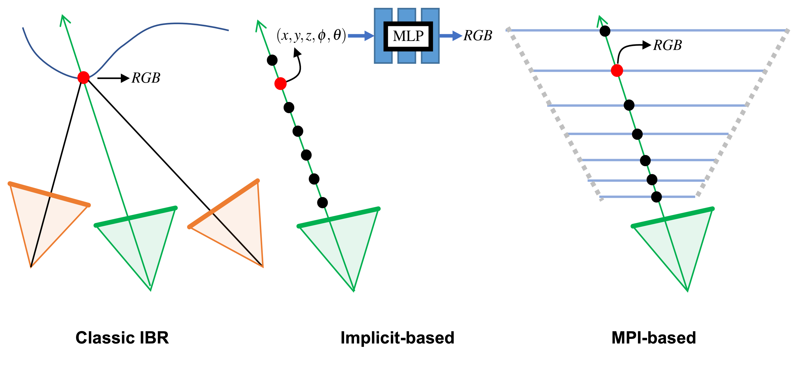
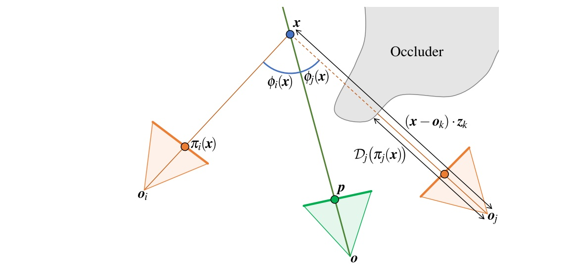

Volumetric view synthesis methods with neural representations, such as NeRF and NeX, have recently demonstrated high-quality novel view synthesis. However, optimizing these representations is slow, and even fully trained models cannot reproduce all fine details in the input views.
We present a simple but effective technique to boost the rendering quality, which can be easily integrated with most view synthesis methods. The core idea is to transfer Color Residuals (the difference between the input images and their reconstruction) from training views to novel views. We blend the residuals from multiple views using a heuristic weighting scheme depending on Ray Visibility and Angular Differences.
We integrate our technique with several state-of-the-art view synthesis methods and evaluate the Real Forward-facing and the Shiny datasets. Our results show that at about 1/10th the number of training iterations, we achieve the same rendering quality as fully converged NeRF and NeX models, and when applied to fully converged models, we significantly improve their rendering quality.
@article{rong2022bvs,
author = {Rong, Xuejian and Huang, Jia-Bin and Saraf, Ayush and Kim, Changil and Kopf, Johannes},
title = {Boosting View Synthesis with Residual Transfer},
journal = {CVPR},
year = {2022},
}